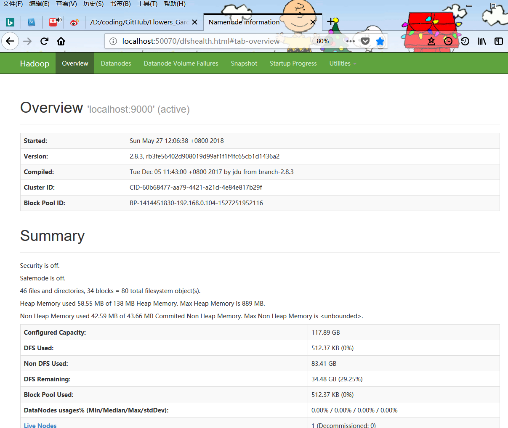
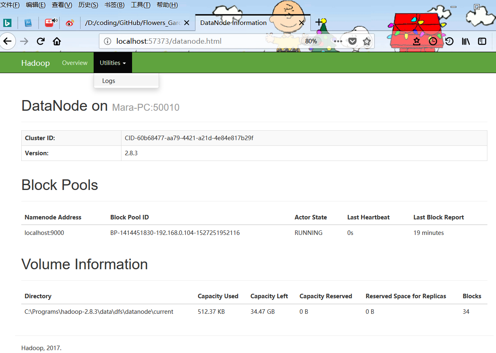
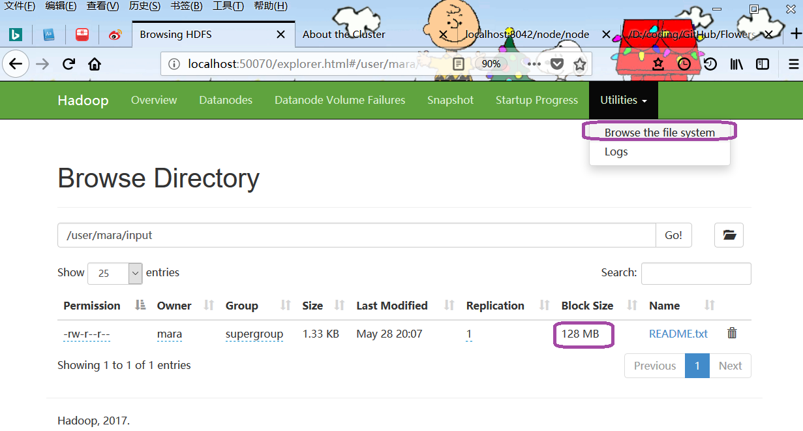
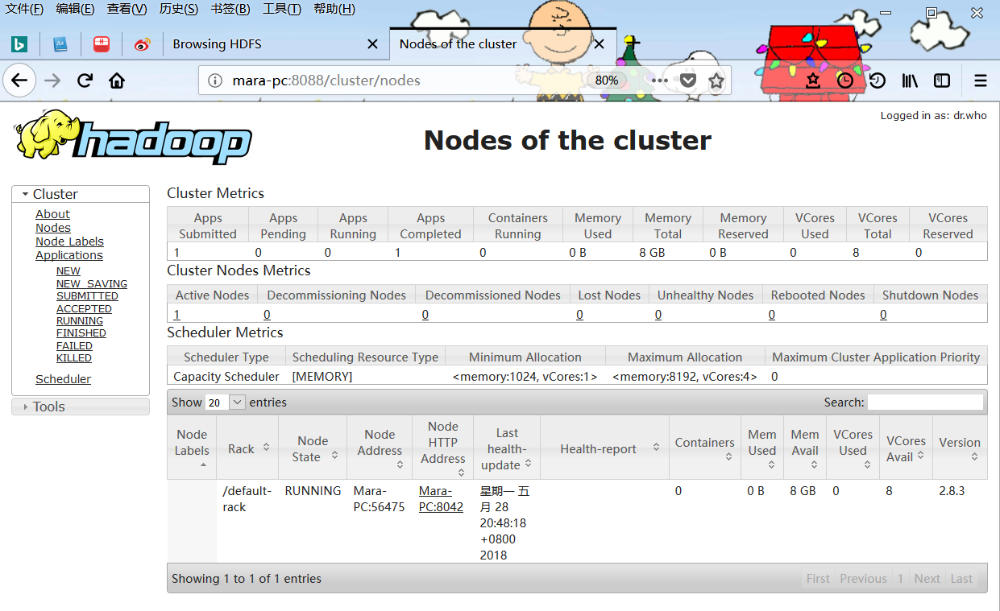
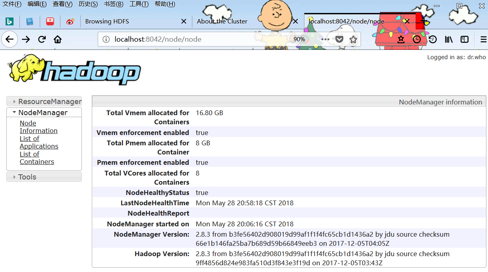
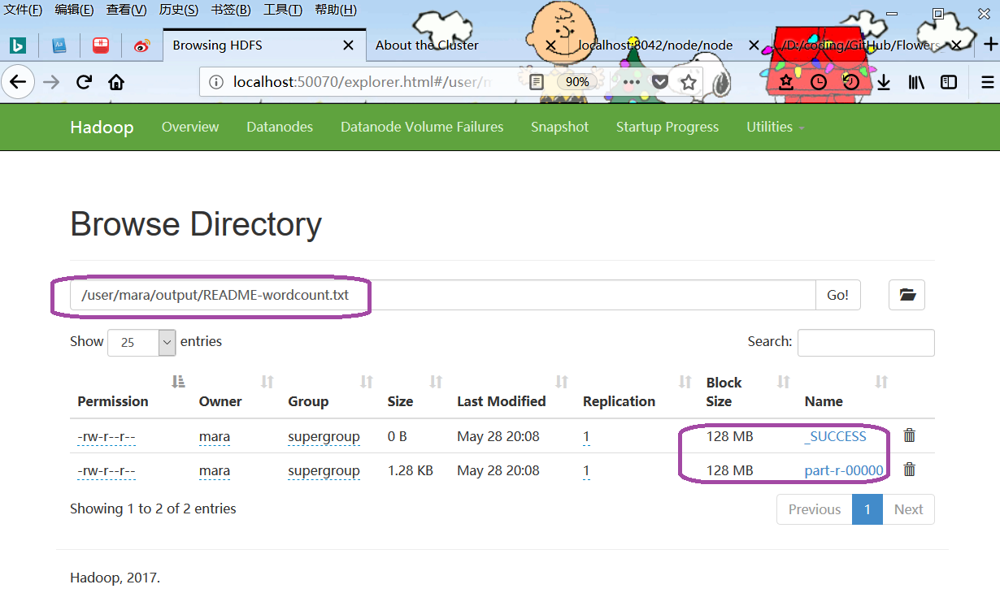

https://blog.csdn.net/xrui_java7/article/details/70231221
https://www.cnblogs.com/wuxun1997/p/6847950.html
https://www.cnblogs.com/jpfss/p/7677964.html
大数据计算环境并不待见Windows，这是因为扩展新的节点时，无论操作系统还是应用软件都会产生更多费用。开源免费的Linux平台才是大数据的舞台。
对于很多初学者或开发者，Windows环境意味着熟悉和便利。然而Hadoop官方根本就没提供Windows版本的安装介质，它仅仅提供了一个页面介绍如果从源代码自行构建出Windows安装介质，它认为这个过程相当直观容易：
https://wiki.apache.org/hadoop/Hadoop2OnWindows
事实并非如此，编译源码需要下载安装很多工具包，我做到一半时彻底放弃了，因为太费时费力了！
参见以上网文可知，有好心的开发者已经提供了编译好的Windows文件，按照介绍的步骤可以简单地安装Hadoop。
以下网址提供了Windows平台编译好的hadoop文件：
https://github.com/steveloughran/winutils
它目前最后的稳定版本是2.8.3，因此在官网下载hadoop时应该选择2.8.3版本而不是最新版本：
http://archive.apache.org/dist/hadoop/common/hadoop-2.8.3/hadoop-2.8.3.tar.gz
https://mirrors.tuna.tsinghua.edu.cn/apache/hadoop/common/stable/
在命令窗口运行命令“set JAVA_HOME”，应确保JAVA_HOME不包含空格。若JDK缺省安装在“C:\Program Files”路径下，则建议重装JDK最新版到不含空格的路径下。
http://www.oracle.com/technetwork/java/javase/downloads/index.html
从官网下载hadoop-2.8.3.tar.gz，解压到一个目录下，如“D:\Programs\hadoop-2.8.3\”。注意目录的路径不要包含汉字不要包含空格。
添加系统变量“HADOOP_HOME”，定义为hadoop介质解压的目录。
将“%HADOOP_HOME%\bin”和“%HADOOP_HOME%\sbin”添加到系统变量PATH中。
从https://github.com/steveloughran/winutils下载“hadoop-2.8.3/bin”下所有文件，覆盖%HADOOP_HOME%\bin下的文件。
在命令窗口运行命令"hadoop"和"hadoop version"，如：
D:\Programs\hadoop-2.8.3>hadoop
Usage: hadoop [--config confdir] [--loglevel loglevel] COMMAND
where COMMAND is one of:
fs run a generic filesystem user client
version print the version
jar run a jar file
note: please use "yarn jar" to launch
YARN applications, not this command.
checknative [-a|-h] check native hadoop and compression libraries availability
distcp copy file or directories recursively
archive -archiveName NAME -p * create a hadoop archive
classpath prints the class path needed to get the
Hadoop jar and the required libraries
credential interact with credential providers
key manage keys via the KeyProvider
daemonlog get/set the log level for each daemon
or
CLASSNAME run the class named CLASSNAME
Most commands print help when invoked w/o parameters.
D:\Programs\hadoop-2.8.3>hadoop version
Hadoop 2.8.3
Subversion https://git-wip-us.apache.org/repos/asf/hadoop.git -r b3fe56402d908019d99af1f1f4fc65cb1d1436a2
Compiled by jdu on 2017-12-05T03:43Z
Compiled with protoc 2.5.0
From source with checksum 9ff4856d824e983fa510d3f843e3f19d
This command was run using /D:/Programs/hadoop-2.8.3/share/hadoop/common/hadoop-common-2.8.3.jar
为Hadoop的节点创建数据目录，例如：
d:/Programs/hadoop-2.8.3/data/dfs/namenode
d:/Programs/hadoop-2.8.3/data/dfs/datanode
编辑hadoop安装目录下子目录etc/hadoop中的如下文件，注意windows目录的引用方式。
编辑”etc\hadoop\hdfs-site.xml“，写入节点目录：
<configuration>
<property>
<name>dfs.replication</name>
<value>1</value>
</property>
<property>
<name>dfs.namenode.name.dir</name>
<value>file:///d://Programs/hadoop-2.8.3/data/dfs/namenode</value>
</property>
<property>
<name>dfs.datanode.data.dir</name>
<value>file:///d://Programs/hadoop-2.8.3/data/dfs/datanode</value>
</property>
</configuration>
编辑”etc\hadoop\core-site.xml“：
<configuration>
<property>
<name>fs.defaultFS</name>
<value>hdfs://localhost:9000</value>
</property>
<property>
<name>fs.default.name</name>
<value>hdfs://localhost:19000</value>
</property>
<property>
<name>hadoop.tmp.dir</name>
<value>file:///d://Programs/hadoop-2.8.3/data/tmp</value>
</property>
</configuration>
编辑”etc\hadoop\mapred-site.xml“：
<configuration>
<property>
<name>mapreduce.job.user.name</name>
<value>%USERNAME%</value>
</property>
<property>
<name>mapreduce.framework.name</name>
<value>yarn</value>
</property>
<property>
<name>yarn.apps.stagingDir</name>
<value>file:///d://Programs/hadoop-2.8.3/data/user/%USERNAME%/staging</value>
</property>
<property>
<name>mapreduce.jobtracker.address</name>
<value>local</value>
</property>
<property>
<name>mapreduce.jobhistory.address </name>
<value>localhost:10020</value>
</property>
<property>
<name>mapreduce.jobhistory.webapp.address</name>
<value>localhost:19888</value>
</property>
</configuration>
编辑”etc\hadoop\yarn-site.xml“：
<configuration>
<!-- Site specific YARN configuration properties -->
<property>
<name>yarn.nodemanager.aux-services</name>
<value>mapreduce_shuffle</value>
</property>
<property>
<name>yarn.nodemanager.aux-services.mapreduce.shuffle.class</name>
<value>org.apache.hadoop.mapred.ShuffleHandler</value>
</property>
<property>
<name>yarn.server.resourcemanager.address</name>
<value>localhost:8020</value>
</property>
<property>
<name>yarn.server.resourcemanager.application.expiry.interval</name>
<value>60000</value>
</property>
<property>
<name>yarn.server.nodemanager.address</name>
<value>localhost:45454</value>
</property>
<property>
<name>yarn.server.nodemanager.remote-app-log-dir</name>
<value>file:///d://Programs/hadoop-2.8.3/data/app-logs</value>
</property>
<property>
<name>yarn.nodemanager.log-dirs</name>
<value>file:///d://Programs/hadoop-2.8.3/data/dep/logs/userlogs</value>
</property>
<property>
<name>yarn.server.mapreduce-appmanager.attempt-listener.bindAddress</name>
<value>localhost</value>
</property>
<property>
<name>yarn.server.mapreduce-appmanager.client-service.bindAddress</name>
<value>localhost</value>
</property>
<property>
<name>yarn.log-aggregation-enable</name>
<value>true</value>
</property>
<property>
<name>yarn.log-aggregation.retain-seconds</name>
<value>-1</value>
</property>
<property>
<name>yarn.log.server.url</name>
<value>http://loalhost:19888/jobhistory/logs</value>
</property>
<property>
<name>yarn.application.classpath</name>
<value>%HADOOP_CONF_DIR%,%HADOOP_COMMON_HOME%/share/hadoop/common/*,%HADOOP_COMMON_HOME%/share/hadoop/common/lib/*,%HADOOP_HDFS_HOME%/share/hadoop/hdfs/*,%HADOOP_HDFS_HOME%/share/hadoop/hdfs/lib/*,%HADOOP_MAPRED_HOME%/share/hadoop/mapreduce/*,%HADOOP_MAPRED_HOME%/share/hadoop/mapreduce/lib/*,%HADOOP_YARN_HOME%/share/hadoop/yarn/*,%HADOOP_YARN_HOME%/share/hadoop/yarn/lib/*</value>
</property>
</configuration>
注意：以下所有步骤都应当以管理员身份打开命令窗口来执行，否则会碰到各种权限问题。
在命令窗口运行命令"hdfs namenode -format"。这个命令只需要运行一次。
在命令窗口运行命令"start-dfs"，则两个新命令窗口弹出、分别对应NameNode和DataNode的监视信息。
以下是NameNode的关键信息：
DEPRECATED: Use of this script to execute hdfs command is deprecated.
Instead use the hdfs command for it.
18/05/25 20:41:04 INFO namenode.NameNode: STARTUP_MSG:
/************************************************************
STARTUP_MSG: Starting NameNode
STARTUP_MSG: user = mara
STARTUP_MSG: host = Mara-PC/192.168.0.104
STARTUP_MSG: args = []
STARTUP_MSG: version = 2.8.3
STARTUP_MSG: java = 1.8.0_172
************************************************************/
18/05/25 20:41:04 INFO namenode.NameNode: createNameNode []
18/05/25 20:41:05 INFO impl.MetricsConfig: loaded properties from hadoop-metrics2.properties
18/05/25 20:41:05 INFO namenode.NameNode: fs.defaultFS is hdfs://localhost:9000
18/05/25 20:41:05 INFO hdfs.DFSUtil: Starting Web-server for hdfs at: http://0.0.0.0:50070
由此可知：hdfs数据交换发生在端口9000（RPC编程端口）；而NameNode的管理站点网址为”http://localhost:50070/“。在浏览器中打开这个网址：
以下是DataNode的关键信息：
DEPRECATED: Use of this script to execute hdfs command is deprecated.
Instead use the hdfs command for it.
18/05/25 20:41:04 INFO datanode.DataNode: STARTUP_MSG:
/************************************************************
STARTUP_MSG: Starting DataNode
STARTUP_MSG: user = mara
STARTUP_MSG: host = Mara-PC/192.168.0.104
STARTUP_MSG: args = []
STARTUP_MSG: version = 2.8.3
18/05/25 20:41:05 INFO impl.MetricsConfig: loaded properties from hadoop-metrics2.properties
18/05/25 20:41:05 INFO datanode.DataNode: Opened streaming server at /0.0.0.0:50010
18/05/25 20:41:06 INFO http.HttpServer2: Jetty bound to port 57373
18/05/25 20:41:06 INFO web.DatanodeHttpServer: Listening HTTP traffic on /0.0.0.0:50075
18/05/25 20:41:07 INFO datanode.DataNode: Opened IPC server at /0.0.0.0:50020
18/05/25 20:41:07 INFO datanode.DataNode: Acknowledging ACTIVE Namenode during handshakeBlock
pool (Datanode Uuid unassigned) service to localhost/127.0.0.1:9000
18/05/25 20:41:08 INFO datanode.DataNode: For namenode localhost/127.0.0.1:9000 using
BLOCKREPORT_INTERVAL of 21600000msec CACHEREPORT_INTERVAL of 10000msec Initial delay: 0msec;
heartBeatInterval=3000
由此可知：DataNode的管理站点网址为”http://localhost:57373/“（每次端口可能不同）。在浏览器中打开这个网址：
创建HDFS目录：
D:\Programs\hadoop-2.8.3>hdfs dfs -mkdir /tmp
D:\Programs\hadoop-2.8.3>hdfs dfs -mkdir /user
D:\Programs\hadoop-2.8.3>hdfs dfs -mkdir /user/mara
D:\Programs\hadoop-2.8.3>hdfs dfs -mkdir /user/mara/input
D:\Programs\hadoop-2.8.3>hdfs dfs -mkdir /user/mara/output
查看HDFS目录：
D:\Programs\hadoop-2.8.3>hdfs dfs -ls /
Found 1 items
drwxr-xr-x - mara supergroup 0 2018-05-25 21:13 /tmp
drwxr-xr-x - mara supergroup 0 2018-05-25 21:13 /user
D:\Programs\hadoop-2.8.3>hdfs dfs -ls /user
Found 1 items
drwxr-xr-x - mara supergroup 0 2018-05-25 21:13 /user/mara
D:\Programs\hadoop-2.8.3>hdfs dfs -ls /user/mara
Found 2 items
drwxr-xr-x - mara supergroup 0 2018-05-25 21:13 /user/mara/input
drwxr-xr-x - mara supergroup 0 2018-05-25 21:15 /user/mara/output
查看HDFS空间：
C:\Users\mara>hdfs dfs -df -h
Filesystem Size Used Available Use%
hdfs://localhost:9000 117.9 G 512.4 K 34.5 G 0%
复制文件：
C:\Users\mara>hdfs dfs -put file:///D://Programs/hadoop-2.8.3/README.txt /user/mara/input
C:\Users\mara>hdfs dfs -ls /user/mara/input
Found 1 items
-rw-r--r-- 1 mara supergroup 1366 2018-05-28 19:31 /user/mara/input/README.txt
可以在NameNode管理界面查看HDFS目录内容：
在命令窗口运行命令"start-yarn"，则两个新命令窗口弹出、分别对应ResourceManager和NodeManager的监视信息。
以下是ResourceManager的关键信息：
18/05/25 20:41:04 INFO resourcemanager.ResourceManager: STARTUP_MSG:
/************************************************************
STARTUP_MSG: Starting ResourceManager
STARTUP_MSG: user = mara
STARTUP_MSG: host = Mara-PC/192.168.0.104
STARTUP_MSG: args = []
STARTUP_MSG: version = 2.8.3
18/05/25 20:41:05 INFO conf.Configuration: found resource core-site.xml at file:/D:/Programs/hadoop-2.8.3/etc/hadoop/core-site.xml
18/05/25 20:41:05 INFO security.Groups: clearing userToGroupsMap cache
18/05/25 20:41:05 INFO conf.Configuration: found resource yarn-site.xml at file:/D:/Programs/hadoop-2.8.3/etc/hadoop/yarn-site.xml
18/05/25 20:41:06 INFO ipc.Server: IPC Server listener on 8031: starting
18/05/25 20:41:06 INFO ipc.Server: IPC Server listener on 8030: starting
18/05/25 20:41:06 INFO ipc.Server: IPC Server listener on 8032: starting
18/05/25 20:41:08 INFO webapp.WebApps: Web app cluster started at 8088
18/05/25 20:41:08 INFO ipc.Server: IPC Server listener on 8033: starting
由此可知：ResourceManager的管理站点网址为”http://localhost:8088/“。在浏览器中打开这个网址：
以下是NodeManager的关键信息：
18/05/25 20:41:04 INFO nodemanager.NodeManager: STARTUP_MSG:
/************************************************************
STARTUP_MSG: Starting NodeManager
STARTUP_MSG: user = mara
STARTUP_MSG: host = Mara-PC/192.168.0.104
STARTUP_MSG: args = []
STARTUP_MSG: version = 2.8.3
18/05/25 20:41:07 INFO ipc.Server: IPC Server listener on 52632: starting
18/05/25 20:41:08 INFO ipc.Server: IPC Server listener on 8040: starting
18/05/25 20:41:08 INFO mapred.ShuffleHandler: mapreduce_shuffle listening on port 13562
18/05/25 20:41:08 INFO containermanager.ContainerManagerImpl: ContainerManager started at Mara-PC/192.168.0.104:52632
18/05/25 20:41:09 INFO webapp.WebApps: Web app node started at 8042
由此可知：NodeManager的管理站点网址为”http://localhost:8042/“。在浏览器中打开这个网址：
在命令窗口运行以下命令以运行MapReduce示例：
D:\>yarn jar %HADOOP_HOME%\share\hadoop\mapreduce\hadoop-mapreduce-examples-2.8.3.jar wordcount /user/mara/input/README.txt /user/mara/output/README-wordcount.txt
18/05/28 20:08:26 INFO client.RMProxy: Connecting to ResourceManager at /0.0.0.0:8032
18/05/28 20:08:27 INFO input.FileInputFormat: Total input files to process : 1
18/05/28 20:08:27 INFO mapreduce.JobSubmitter: number of splits:1
18/05/28 20:08:27 INFO mapreduce.JobSubmitter: Submitting tokens for job: job_1527509177914_0001
18/05/28 20:08:27 INFO impl.YarnClientImpl: Submitted application application_1527509177914_0001
18/05/28 20:08:27 INFO mapreduce.Job: The url to track the job: http://Mara-PC:8088/proxy/application_1527509177914_0001/
18/05/28 20:08:27 INFO mapreduce.Job: Running job: job_1527509177914_0001
18/05/28 20:08:34 INFO mapreduce.Job: Job job_1527509177914_0001 running in uber mode : false
18/05/28 20:08:34 INFO mapreduce.Job: map 0% reduce 0%
18/05/28 20:08:38 INFO mapreduce.Job: map 100% reduce 0%
18/05/28 20:08:43 INFO mapreduce.Job: map 100% reduce 100%
18/05/28 20:08:44 INFO mapreduce.Job: Job job_1527509177914_0001 completed successfully
18/05/28 20:08:45 INFO mapreduce.Job: Counters: 49
File System Counters
FILE: Number of bytes read=1836
FILE: Number of bytes written=325239
FILE: Number of read operations=0
FILE: Number of large read operations=0
FILE: Number of write operations=0
HDFS: Number of bytes read=1480
HDFS: Number of bytes written=1306
HDFS: Number of read operations=6
HDFS: Number of large read operations=0
HDFS: Number of write operations=2
Job Counters
Launched map tasks=1
Launched reduce tasks=1
Data-local map tasks=1
Total time spent by all maps in occupied slots (ms)=2257
Total time spent by all reduces in occupied slots (ms)=2431
Total time spent by all map tasks (ms)=2257
Total time spent by all reduce tasks (ms)=2431
Total vcore-milliseconds taken by all map tasks=2257
Total vcore-milliseconds taken by all reduce tasks=2431
Total megabyte-milliseconds taken by all map tasks=2311168
Total megabyte-milliseconds taken by all reduce tasks=2489344
Map-Reduce Framework
Map input records=31
Map output records=179
Map output bytes=2055
Map output materialized bytes=1836
Input split bytes=114
Combine input records=179
Combine output records=131
Reduce input groups=131
Reduce shuffle bytes=1836
Reduce input records=131
Reduce output records=131
Spilled Records=262
Shuffled Maps =1
Failed Shuffles=0
Merged Map outputs=1
GC time elapsed (ms)=71
CPU time spent (ms)=888
Physical memory (bytes) snapshot=485343232
Virtual memory (bytes) snapshot=599015424
Total committed heap usage (bytes)=311427072
Shuffle Errors
BAD_ID=0
CONNECTION=0
IO_ERROR=0
WRONG_LENGTH=0
WRONG_MAP=0
WRONG_REDUCE=0
File Input Format Counters
Bytes Read=1366
File Output Format Counters
Bytes Written=1306
D:\>
在HDFS目录中检查输出文件：
命令“start-all”用来启动全部这四个进程，命令“stop-all”用来停止全部这四个进程。